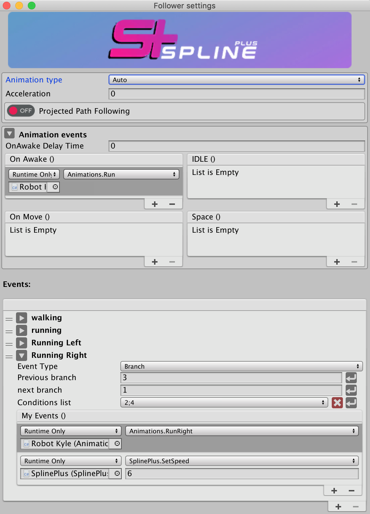
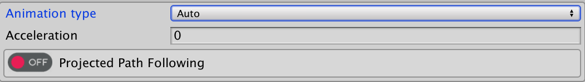
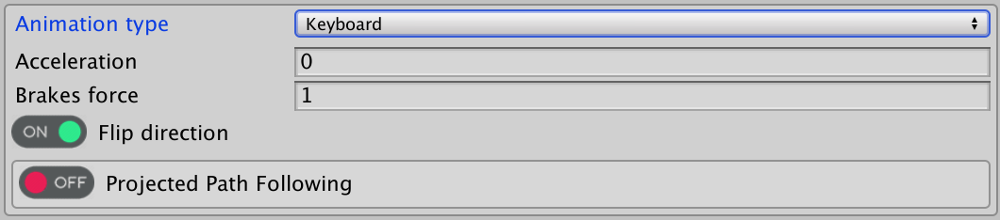
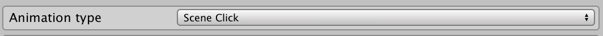
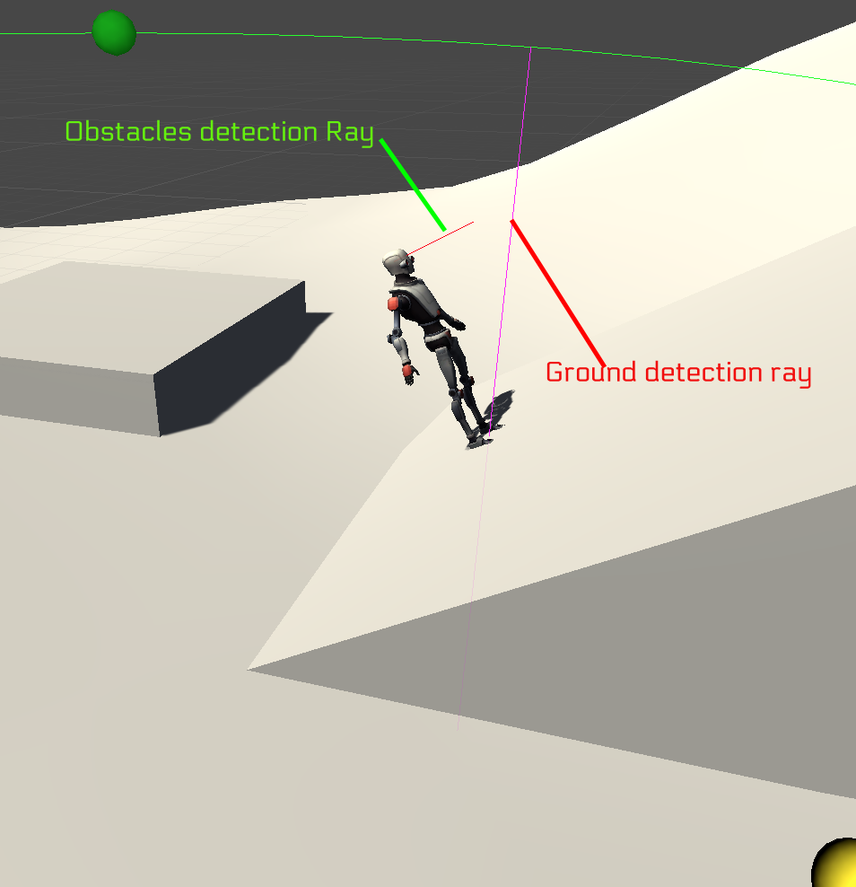
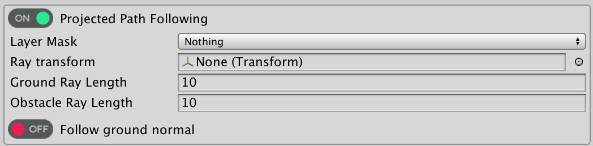
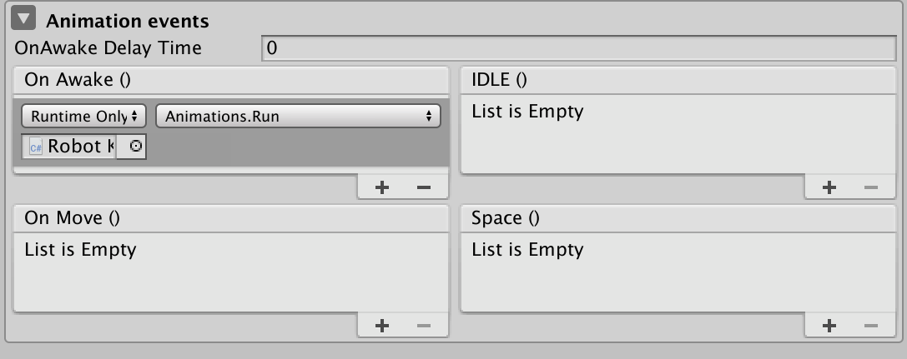
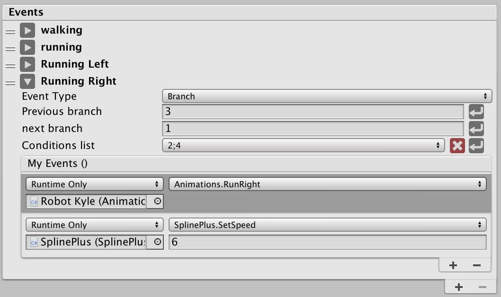

Follower Settings

This window is opened when follower settings buttonis pressed, it contains additional follower settings such as animation type and follower events
| Variables | Description |
|---|---|
| Follower animation type | “Auto animated” move your follower with a defined speed along the spline. “Keyboard input” move your follower using keyboard inputs,“Scene click” move your follower to the closest spline vertex to your scene view mouse click. |
Auto Animated

| Variables | Description |
|---|---|
| Acceleration | this is the time in seconds it takes for the follower to gain it’s full speed or completely stop when game starts. |
| Projected Path Following | Projected path following is using raycasting on followers to sense its surroundings, the path following data is being gathered from both sources, surrounding and raw spline data then it will be combined to form one final modified path following data to be used by the follower,there are currently two ray sensors on each follower , one for the ground and one for the obstacles in front as you can see in the "Projected path following" section bellow. |
Keyboard Input
 Move followers on the spline based on keyboard inputs.
| Variables | Description |
|---|---|
| Acceleration | this is the time in seconds it takes for the follower to gain it’s full speed or completely stop when game starts. |
| Brake force | this represents the brakes force, the minimum value for this is 1”no impact on follower speed”.brakes force will impact the follower speed as its value goes up, |
| Flip direction | this will allow you to keep the follower forward direction when you switch between “Up arrow key” and “Down arrow key”. |
| Projected Path Following | Projected path following is using raycasting on followers to sense its surroundings, the path following data is being gathered from both sources , surrounding and raw spline data then it will be combined to form one final modified path following data to be used by the follower,there are currently two ray sensors on each follower ,one for the ground and one for the obstacles in front as you can see in the "Projected path following" section bellow. |
Scene Click

Scene click is used to move followers on the spline based on game view mouse click position, this has no settings to display.
Projected Path Following
Projected path following is using raycasting on followers to sense its surroundings, the path following data is being gathered from both sources , surrounding and raw spline data then it will be combined to form one final modified path following data to be used by the follower,
there are currently two ray sensors on each follower , one for the ground and one for the obstacles in front as you can see bellow

when “Projected” is selected, you get the following settings which will allow you to perform advanced customization

| Variables | Description |
|---|---|
| Layer Mask | Specifies layers to use in your projection rays |
| Ray transform | Used to define the position and direction of your obstacles sensor ray. |
| Ground Ray Length | used to edit the ground sensor ray length. |
| Obstacle Ray Length | used to edit the obstacle sensor ray length. |
| Follow Ground Normal | the follower will lineup its Upward direction with the ground normal direction if set to true, if set to false then the follower upward direction will be the spline raw normal data, |
Animation Events

| Variables | Description |
|---|---|
| OnAwakeDelayTime | Used to delay the triggering of the “OnAwake” event when the game starts |
| OnAwake | triggered when the game starts |
| OnMove | triggered when the follower moves . |
| IDLE | triggered when the follower stops. |
| Space | triggered when Space key is pressed. |
Events
An advanced events system that fully covers all the possibilities,
To setup your events you need to provide two variants , previous branch key and next branch key ,
then the data provided is stored in an Event conditions array , once one of the conditions in the array is met then the corresponding event will trigger .

| Variables | Description |
|---|---|
| Event Title | Editable text field to customize your event name |
Event type
Branch
| Variables | Description |
|---|---|
| Previous Branch | Previous branch key |
| Next Branch | Next branch key |
| Conditions List | Conditions string array |
| My Events | Events that should be trigerred when one of the conditions in the conditions array is met |
Node
| Variables | Description |
|---|---|
| Detect direction | The follower direction required to trigger an event when follower is on the node there are 3 options that you can choose from Both , Forward , Backward. |
| Node | this is the node transform that will hold the event element. |
| My Events | Events that should be trigerred when one of the conditions in the conditions array is met |